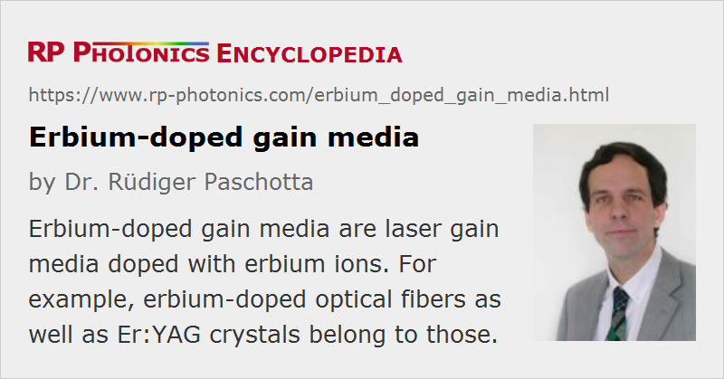

Erbium-doped Gain Media
Definition: laser gain media doped with erbium ions
More general term: solid-state gain media
German: Erbium-dotierte Verstärkermedien
Categories: optical materials, lasers
How to cite the article; suggest additional literature
Author: Dr. Rüdiger Paschotta
Erbium (chemical symbol: Er) is a chemical element belonging to the group of rare earth metals. It is widely used in the form of the trivalent ion Er3+ as the laser-active dopant of gain media based on various host materials, including both crystals and glasses.
Erbium-doped Glasses
Erbium-doped glasses, mostly of silicate and phosphate types, are used both for bulk lasers and fiber lasers and amplifiers. The most common laser transition (also widely used in erbium-doped fiber amplifiers) is that from the 4I13/2 manifold to the ground-state manifold 4I15/2 (Figure 1). Depending on the glass composition, the transition wavelength is usually somewhere between 1.53 and 1.6 μm. Because that transition is a quasi-three-level transition, erbium-doped laser and amplifiers require a significant excitation density of the erbium ions, and erbium lasers typically exhibit a high threshold pump power.
The most common pump scheme is based on the transition 4I15/2 → 4I11/2 with a wavelength around 0.9–1 μm, although in-band pumping (4I15/2 → 4I13/2, e.g. at 1.45 μm) is also possible. A multi-phonon transition, which is relatively fast in silicate glasses (due to their high phonon energies), leads from 4I11/2 to 4I13/2. The upper-state lifetime of 4I13/2 is of the order of 8–10 ms, whereas all higher-lying levels have lifetimes of at most a few microseconds due to fast multi-phonon decay.
Particularly in bulk crystals, but also in fibers, efficient pump absorption on the 4I15/2 → 4I11/2 transition is difficult to achieve, because the absorption cross sections are relatively small, and the doping concentration is limited by the need to avoid excessive quenching processes. A common method to solve this problem is codoping with ytterbium (Yb3+) sensitizer ions. The ytterbium ions can efficiently absorb pump radiation e.g. at 980 nm, and then transfer the energy to erbium ions in the ground-state manifold, bringing them into 4I11/2. From that level, the ions are quickly transferred into the upper laser level 4I13/2, so that energy transfer back to ytterbium is suppressed. Erbium–ytterbium-doped fibers are used e.g. for erbium-doped fiber amplifiers and for short fiber lasers.
The behavior of Er3+ ions is completely different in some host glasses (e.g. fluoride glasses) with a lower phonon energy, which strongly reduces multi-phonon transition rates. In such glasses, a variety of higher-lying energy levels can be populated, and a number of different pumping and lasing schemes are possible. For example, it is possible to realize green-emitting upconversion fiber lasers [2], or lasers emitting around 2.9 μm [12].
In addition to the mentioned optical and multi-phonon transitions, many energy transfer processes can occur, particularly for high doping concentrations. For example, cooperative upconversion can occur, where one erbium ion in 4I13/2 transfers energy to a second ion in that level, resulting in one ion in 4I9/2 and another one in the ground-state manifold. Due to the multitude of excited levels, and also because of the different behavior of ions in clusters, it is difficult to obtain reliable spectroscopic data for comprehensive modeling of such processes.
Erbium-doped bulk glasses are used e.g. for Q-switched lasers (e.g. as microchip lasers) emitting in the 1.5-μm spectral region, as are applied e.g. for range finding. Such glasses can also be pumped with flash lamps, particularly when the absorption efficiency is increased, e.g. with chromium (Cr3+) or ytterbium (Yb3+) codopants. (Such codopants can absorb additional energy from the pump light and partially transfer it to erbium ions.) The main application of erbium-doped glasses, however, is in erbium-doped fiber amplifiers for optical fiber communications.
Erbium-doped Crystals
Lasing of erbium ions was first realized with highly doped Er:YAG crystals [1]. In that case, the laser transition is 4I11/2 → 4I13/2, with an emission wavelength around 2.9 μm. For low doping concentrations, this laser transition would be self-terminating, as the lower level has a significantly longer lifetime than the upper level. For high erbium concentrations, however, complicated energy transfer processes changes this situation.
Er:YAG lasers can also be operated on the 4I13/2 → 4I15/2 transition, then emitting around 1.645 μm. Efficient operation can be achieved by in-band pumping e.g. with an erbium-doped fiber laser emitting at 1.53 μm.
Er:YAG crystals can be pumped with flash lamps or (much more efficiently) with laser diodes. They are often used in Q-switched lasers. The 2.9-μm light is strongly absorbed in water, making such lasers suitable for a variety of medical applications.
Erbium is also sometimes used in other laser crystals, such as Er:YLF, Er:YALO, tungstates and vanadates.
Suppliers
The RP Photonics Buyer's Guide contains 29 suppliers for erbium-doped gain media.
Questions and Comments from Users
Here you can submit questions and comments. As far as they get accepted by the author, they will appear above this paragraph together with the author’s answer. The author will decide on acceptance based on certain criteria. Essentially, the issue must be of sufficiently broad interest.
Please do not enter personal data here; we would otherwise delete it soon. (See also our privacy declaration.) If you wish to receive personal feedback or consultancy from the author, please contact him e.g. via e-mail.
By submitting the information, you give your consent to the potential publication of your inputs on our website according to our rules. (If you later retract your consent, we will delete those inputs.) As your inputs are first reviewed by the author, they may be published with some delay.
Bibliography
| [1] | E. V. Zharikov et al., “Stimulated emission from Er3+ ions in yttrium aluminum garnet crystals at λ = 2.94 μm”, Sov. J. Quantum Electron. 4, 1039 (1975) |
| [2] | A. J. Silversmith et al., “Green infrared-pumped erbium upconversion laser”, Appl. Phys. Lett. 51, 1977 (1987), doi:10.1063/1.98316 |
| [3] | M. E. Fermann et al., “Efficient operation of an Yb-sensitised Er fiber laser at 1.56 μm”, Electron. Lett. 24, 1135 (1988), doi:10.1049/el:19880772 |
| [4] | F. Tong et al., “551 nm diode-laser-pumped upconversion laser”, Electron. Lett. 25, 1389 (1989), doi:10.1049/el:19890930 |
| [5] | P. R. Morkel et al., “Theoretical modeling of erbium-doped fiber amplifiers with excited-state absorption”, Opt. Lett. 14 (19), 1062 (1989), doi:10.1364/OL.14.001062 |
| [6] | T. Hebert et al., “Blue and green CW upconversion lasing in Er:YLiF4”, Appl. Phys. Lett. 57, 1727 (1990), doi:10.1063/1.104048 |
| [7] | W. J. Miniscalco, “Erbium-doped glasses for fiber amplifiers at 1500 nm”, IEEE J. Lightwave Technol. 9 (2), 234 (1991), doi:10.1109/50.65882 |
| [8] | W. L. Barnes et al., “Absorption and emission cross section of Er3+ doped silica fibers”, IEEE J. Quantum Electron. 27 (4), 1004 (1991), doi:10.1109/3.83335 |
| [9] | T. J. Whitley et al., “Upconversion pumped green lasing in erbium doped fluorozirconate fibre”, Electron. Lett. 27 (20), 1785 (1991), doi:10.1049/el:19911110 |
| [10] | S. Konkanen et al., “High Er concentration phosphate glasses for planar waveguide amplifiers”, Proc. SPIE 2996, 32 (1997), doi:10.1117/12.271162 |
| [11] | G. G. Vienne et al., “Fabrication and characterization of Yb3+:Er3+ phosphosilicate fibers for lasers”, J. Lightwave Technol. 16 (11), 1990 (1998), doi:10.1109/50.730360 |
| [12] | M. Pollnau and S. D. Jackson, “Erbium 3 μm fiber lasers”, JSTQE 7 (1), 30 (2001), doi:10.1109/2944.924006 |
| [13] | J. F. Philipps et al., “Spectroscopic and lasing properties of Er3+:Yb3+-doped fluoride phosphate glasses”, Appl. Phys. B 72, 399 (2001), doi:10.1007/s003400100515 |
| [14] | S. Tanabe, “Rare-earth-doped glasses for fiber amplifiers in broadband telecommunication”, C. R. Chimie 5, 815 (2002) |
| [15] | G. C. Valley, “Modeling cladding-pumped Er/Yb fiber amplifiers”, Opt. Fiber Technol. 7, 21 (2001), doi:10.1006/ofte.2000.0351 |
| [16] | H. Scheife et al., “Advances in up-conversion lasers based on Er3+ and Pr3+”, Opt. Mater. 26 (4), 365 (2004), doi:10.1016/j.optmat.2003.10.010 |
| [17] | D. Garbuzov et al., “110 W (0.9 J) pulsed power from resonantly diode-laser-pumped 1.6-μm Er:YAG laser”, Appl. Phys. Lett. 87, 121101 (2005), doi:10.1063/1.2051803 |
| [18] | Y. E. Young et al., “Efficient 1645-nm Er:YAG laser”, Opt. Lett. 29 (10), 1075 (2004), doi:10.1364/OL.29.001075 |
| [19] | J. O. White et al., “Resonant pumping and upconversion in 1.6 μm Er3+ lasers”, J. Opt. Soc. Am. B 24 (9), 2454 (2007), doi:10.1364/JOSAB.24.002454 |
| [20] | C. C. Baker et al., “Rare earth co-doping for increased efficiency of resonantly pumped Er-fiber lasers”, Optical Materials Express 9 (3), 1041 (2019), doi:10.1364/OME.9.001041 |
See also: gain media, rare-earth-doped gain media, upconversion lasers
and other articles in the categories optical materials, lasers
|  |
If you like this page, please share the link with your friends and colleagues, e.g. via social media:
These sharing buttons are implemented in a privacy-friendly way!